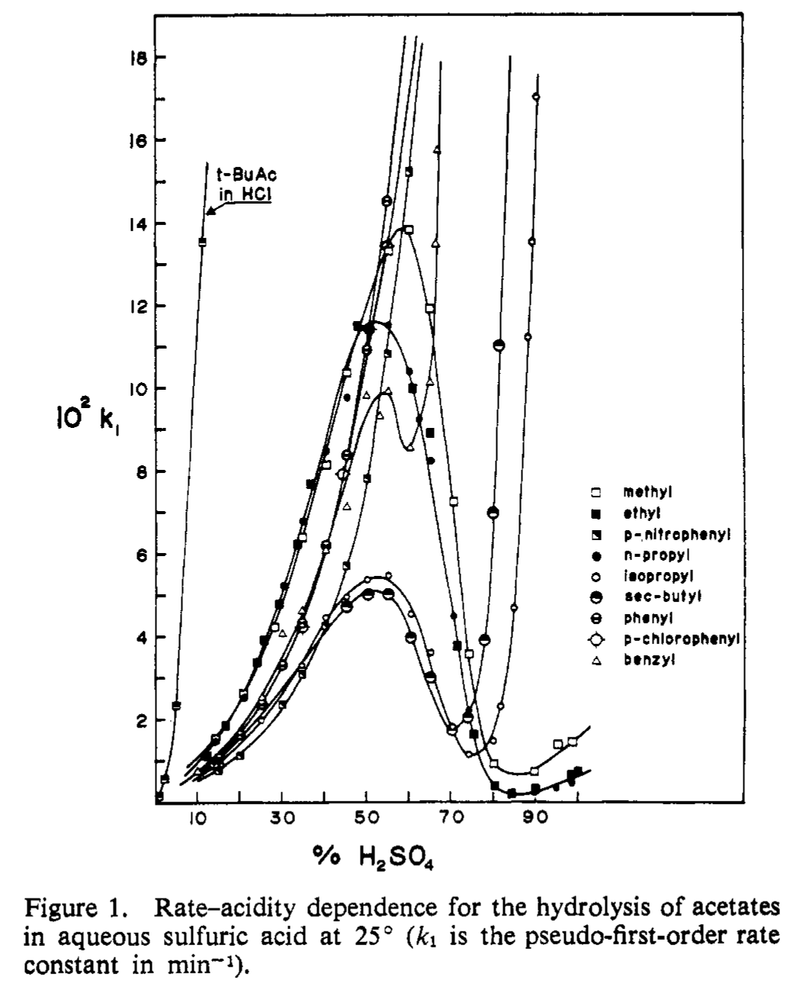

Extracting MeOAc Data#
In Yates & McClellane, 1967 there are reported values for rate vs [H2SO4] in extreme acid mixtures for hydrolysis of esters. The MeOAc data set is incomplete. The highest acidity results are not reported in the table biut are shown on the plot (Fig 1 and 3 in the paper). To be able to reproduce the plot of Figure 1, I need to get that data.
“Mechanisms of ester hydrolysis in aqueous sulfuric acids.” Keith Yates and Robert A. McClelland, J. Am. Chem. Soc., 1967, 89, 2686-2692. https://doi.org/10.1021/ja00987a033
Step 1: Digitize Plot.#
I used WebPlotDigitizer to extract the data. Figure 3 had the best resolution and separation of data points for MeOAc but required conversion of the results.
First we will digitize the results from Fig 1.
Setup#
the code below will setup libraries and variables
Show code cell source
##############################################################
### Set up libraries and global variables
##############################################################
import interpolators ### import the following functions from local library
# interpolators.MakeInterpolationFunctionForH0inH2SO4byPercentWt()
# interpolators.MakeInterpolationFunctionForH2OActivityinH2SO4byMoleFraction()
# interpolators.MakeInterpolationFunctionForH2OActivityinH2SO4byPercentWt()
# interpolators.MakeInterpolationFunctionForDensityofH2SO4byPercentWt()
import pandas as pd
pd.options.mode.chained_assignment = None # no warning message and no exception is raised
import numpy as np
import matplotlib.pyplot as plt
import scipy.stats as stats
from scipy.optimize import curve_fit
from scipy.stats import linregress
from scipy.optimize import minimize
from scipy.optimize import minimize_scalar
from statsmodels.nonparametric.smoothers_lowess import lowess # A function for interpolating a plot using the locally weighed scatterplot smoothing method. Returns smoothed x,y points
from scipy.interpolate import CubicSpline # A function for interpolating a plot using the cubic spline method. Returns an interpolation function.
from scipy.interpolate import interp1d # A function for interpolating a plot using the connect-the-dots method. Returns an interpolation function.
from scipy.interpolate import make_smoothing_spline # A function for interpolating a plot using a Bspline algorithm. Returns an interpolation function.
from matplotlib.patches import PathPatch
from matplotlib.path import Path
#github_location = "https://raw.githubusercontent.com/blinkletter/4410PythonNotebooks/main/Class_30/data/"
github_location = "./data/"
github_H0_location = "https://raw.githubusercontent.com/blinkletter/4410PythonNotebooks/main/Class_08/data/H0_data/"
github_location_styles = "https://raw.githubusercontent.com/blinkletter/LFER-QSAR/main/styles/"
github_location_styles = "./styles/"
github_location_LFER_tables = "https://raw.githubusercontent.com/blinkletter/LFER-QSAR/main/data/"
molwtH2SO4 = 98.08
molwtH2O = 18.0
densityH2SO4 = 1.83
densityH2O = 1.000
Comparing Data#
Below we will plot the data for rate vs %H2SO4 for the data from table 1 of the paper
###################################################
### Import the data and perform calculations
###################################################
Data_File_Name = "Yates_Figure1_Digitized.csv"
#Data_File_Name = "Yates_Figure1_Digitized2.csv"
Filename = github_location + Data_File_Name
df_digitized = pd.read_csv(Filename,
delimiter = ",",
skipinitialspace=True,
# index_col="Substituent",
comment = "#")
#print("Data from digitized Figure 1\n")
display(df_digitized)
###################################################
Data_File_Name = "Yates_Table1.csv"
Filename = github_location + Data_File_Name
df_table1 = pd.read_csv(Filename,
delimiter = ",",
skipinitialspace=True,
# index_col="Substituent",
comment = "#")
df_table1 = (df_table1.loc[df_table1['Ester'] == 'MeOAc']) ### Select only the MeOAc data
df_table1 = df_table1.iloc[:-3] ### Remove last three rows which are digitized data from figure 3
df_table1 = df_table1.reset_index(drop=True) ### Reset the index so its sequential after removing rows
#print("Data from Table 1")
display(df_table1)
###################################################
### MAKE PLOT
###################################################
###################################################
### Create figure for plot
###################################################
style = "tufte.mplstyle"
#style = "S2_classic2.mplstyle"
style_name = github_location_styles + style
plt.style.use(style_name)
fig, ax = plt.subplots(nrows=1, ncols=1, figsize=(5,4))
#ax2 = ax.twinx()
###################################################
### Set up labels
###################################################
y_label = r"$10^2\ k_{obs}$"
x_label = r"$\%\ H_2SO_4$"
###################################################
### RATE vs ACIDITY Plot
###################################################
if True: # Set up axes for main plot
ax.set(ylabel=y_label, xlabel=x_label,
xlim=[-5,105],
ylim=[-1,15]
)
# Data points for kobs vs Acidity
x = df_digitized["%H2SO4"]
y = df_digitized["10^2kobs"]#/(10**2)
ax.scatter(x, y,
marker = "o", s = 30,
color = "white", edgecolors = "red", linewidths=0.7,
zorder = 2)
ax.scatter(x, y, # White circle behind each data point
marker = "o", s = 90,
color = "white",
zorder = 1)
# Data points for kobs vs Acidity
x1 = df_table1["%H2SO4"]
y1 = df_table1["kobs"]#/(10**2)
ax.scatter(x1, y1,
marker = "o", s = 30,
color = "white", edgecolors = "black", linewidths=0.7,
zorder = 2)
ax.scatter(x1, y1, # White circle behind each data point
marker = "o", s = 90,
color = "white",
zorder = 1)
if False: # Data points for kobs vs Acidity
a = linregress(x,y)
print(a)
y_line = a.slope * x + a.intercept
ax.plot(x, y_line, # Plot line fit
"-", color = "black", linewidth=0.7,
zorder = 0)
plt.savefig("plots/03_F02_plot1.pdf")
plt.show()
| %H2SO4 | 10^2kobs | |
|---|---|---|
| 0 | 14.48 | 1.52 |
| 1 | 20.98 | 2.65 |
| 2 | 28.49 | 4.23 |
| 3 | 35.01 | 6.40 |
| 4 | 40.91 | 8.15 |
| 5 | 45.82 | 10.37 |
| 6 | 55.79 | 13.30 |
| 7 | 60.65 | 13.81 |
| 8 | 65.45 | 11.92 |
| 9 | 70.99 | 7.25 |
| 10 | 74.53 | 3.57 |
| 11 | 80.33 | 0.91 |
| 12 | 90.02 | 0.72 |
| 13 | 95.69 | 1.38 |
| 14 | 99.13 | 1.44 |
| Ester | %H2SO4 | kobs | |
|---|---|---|---|
| 0 | MeOAc | 14.1 | 1.500 |
| 1 | MeOAc | 20.7 | 2.610 |
| 2 | MeOAc | 28.3 | 4.220 |
| 3 | MeOAc | 34.8 | 6.410 |
| 4 | MeOAc | 40.4 | 8.140 |
| 5 | MeOAc | 45.4 | 10.400 |
| 6 | MeOAc | 50.2 | 11.400 |
| 7 | MeOAc | 55.2 | 13.300 |
| 8 | MeOAc | 60.4 | 13.800 |
| 9 | MeOAc | 65.2 | 11.900 |
| 10 | MeOAc | 70.4 | 7.250 |
| 11 | MeOAc | 74.1 | 3.830 |
| 12 | MeOAc | 80.0 | 0.931 |
# Delta Plot
#x1d = x1
#y1d = y1
x1d = x1.drop(6).reset_index(drop=True) # Drop a point that is not included in both sets of data
y1d = y1.drop(6).reset_index(drop=True)
xd = x.iloc[:-3].reset_index(drop=True) # drop the last three points that are not included in both sets of data
yd = y.iloc[:-3].reset_index(drop=True)
dX = xd-x1d
dY = yd-y1d
ave_dX = np.mean(dX)
ave_dY = np.mean(dY)
###################################################
### MAKE PLOT
###################################################
###################################################
### Create figure for plot
###################################################
style = "tufte.mplstyle"
#style = "S2_classic2.mplstyle"
style_name = github_location_styles + style
plt.style.use(style_name)
fig, ax = plt.subplots(nrows=1, ncols=1, figsize=(3,3))
#ax2 = ax.twinx()
###################################################
### Set up labels
###################################################
y_label = r"$\Delta\; 10^2\;k_{obs}$"
x_label = r"$\Delta\; \%H_2SO_4$"
###################################################
### RATE vs ACIDITY Plot
###################################################
# Set up axes for main plot
ax.set(ylabel=y_label, xlabel=x_label,
xlim=[-1.2,1],
ylim=[-0.33 ,0.2]
)
# Data points for kobs vs Acidity
ax.scatter(dX, dY,
marker = "o", s = 30,
color = "white", edgecolors = "black", linewidths=0.7,
zorder = 2)
ax.scatter(dX, dY, # White circle behind each data point
marker = "o", s = 90,
color = "white",
zorder = 1)
ax.hlines(0,-1,1, colors='black', zorder=0, linewidth=0.7)
ax.vlines(0,-.3,.2, colors='black', zorder=0, linewidth=0.7)
ax.vlines(np.mean(dX),np.min(dY)-0.03,np.max(dY)+0.03, colors='red', zorder=0, linewidth=0.7)
dY_no_min = dY[dY != dY.min()].reset_index(drop=True) # remove outlier from y values
ax.hlines(np.mean(dY_no_min),np.min(dX)-0.3,np.max(dX)+0.3, colors='red', zorder=0, linewidth=0.7)
print(f"Mean x deviation is {np.mean(dX):0.3f} +/- {np.std(dX):0.3f}")
print(f"Mean y deviation is {np.mean(dY_no_min):0.3f} +/i {np.std(dY_no_min):0.3f}")
np.std(dX)
plt.savefig("plots/03_F03_plot2.pdf")
plt.show()
print(dY)
Mean x deviation is 0.369 +/- 0.135
Mean y deviation is 0.004 +/i 0.019
0 0.020
1 0.040
2 0.010
3 -0.010
4 0.010
5 -0.030
6 0.000
7 0.010
8 0.020
9 0.000
10 -0.260
11 -0.021
dtype: float64
dY_no_min = dY[dY != dY.min()].reset_index(drop=True)
print(dY_no_min)
df_table1a = df_table1.iloc[:-3]
display(df_table1a)
| Ester | %H2SO4 | 10^2kobs | |
|---|---|---|---|
| 0 | MeOAc | 14.1 | 1.50 |
| 1 | MeOAc | 20.7 | 2.61 |
| 2 | MeOAc | 28.3 | 4.22 |
| 3 | MeOAc | 34.8 | 6.41 |
| 4 | MeOAc | 40.4 | 8.14 |
| 5 | MeOAc | 45.4 | 10.40 |
| 6 | MeOAc | 50.2 | 11.40 |
| 7 | MeOAc | 55.2 | 13.30 |
| 8 | MeOAc | 60.4 | 13.80 |
| 9 | MeOAc | 65.2 | 11.90 |
Bibliography#
“Mechanisms of ester hydrolysis in aqueous sulfuric acids.” Keith Yates and Robert A. McClelland, J. Am. Chem. Soc., 1967, 89, 2686-2692. https://doi.org/10.1021/ja00987a033
##############################################################
### DATAFRAME for ESTER HYDROLYSIS KINETIC DATA
##############################################################
##############################################################
### Import the data and perform calculations
##############################################################
Data_File_Name = "Yates_Table1.csv"
Filename = github_location + Data_File_Name
df = pd.read_csv(Filename,
delimiter = ",",
skipinitialspace=True,
# index_col="Substituent",
comment = "#")
#display(df)
df1 = (df.loc[df['Ester'] == 'MeOAc']) ### Select only the MeOAc data
#df1 = (df1.loc[0:11]) ### Select only the given lines
##############################################################
### Perform calculations
##############################################################
df1["kobs"] = df1["kobs"] * 1E-2 * 60 # convert from 10^-2 min^-1 to s^-1
#df1["kobs"] = df1["kobs"]
PercentH2SO4 = df1["%H2SO4"]
molesH2SO4 = PercentH2SO4 / molwtH2SO4
PercentH2O = 100 - PercentH2SO4
molesH2O = PercentH2O / molwtH2O
total_moles = molesH2SO4 + molesH2O
mole_fraction_H2SO4 = molesH2SO4 / total_moles
df1["X_H2SO4"] = mole_fraction_H2SO4
interpolatorH0 = interpolators.MakeInterpolationFunctionForH0inH2SO4byPercentWt()
df1["H0"] = interpolatorH0(PercentH2SO4)
m = 0.62
df1["HS"] = df1["H0"] * m
df1["log_k_obs"] = np.log10(df1["kobs"])
interpolator_aH2O = interpolators.MakeInterpolationFunctionForH2OActivityinH2SO4byPercentWt()
df1["aH2O"] = interpolator_aH2O(PercentH2SO4)
interpolator_density = interpolators.MakeInterpolationFunctionForDensityofH2SO4byPercentWt()
density = interpolator_density(PercentH2SO4)
volume = 1000
gramsH2O = volume * density * PercentH2O/100
molesH2O = gramsH2O / molwtH2O # per liter
df1["Molar_H2O"] = molesH2O
X_H2O = 1-df1["X_H2SO4"] # mole fraction H2O in H2SO4
gamma_H2O = df1["aH2O"]/(X_H2O) # activity coefficient for H2O in H2SO4
df1["Molar_aH2O"] = gamma_H2O * df1["Molar_H2O"]
display(df1)
| Ester | %H2SO4 | kobs | X_H2SO4 | H0 | HS | log_k_obs | aH2O | Molar_H2O | Molar_aH2O | |
|---|---|---|---|---|---|---|---|---|---|---|
| 0 | MeOAc | 14.1 | 0.9000 | 0.029243 | -0.602729 | -0.373692 | -0.045757 | 0.929672 | 52.274995 | 50.062576 |
| 1 | MeOAc | 20.7 | 1.5660 | 0.045716 | -1.037527 | -0.643266 | 0.194792 | 0.873362 | 50.455747 | 46.177140 |
| 2 | MeOAc | 28.3 | 2.5320 | 0.067544 | -1.511469 | -0.937111 | 0.403464 | 0.778090 | 48.018423 | 40.069105 |
| 3 | MeOAc | 34.8 | 3.8460 | 0.089215 | -1.999334 | -1.239587 | 0.585009 | 0.668753 | 45.583388 | 33.470084 |
| 4 | MeOAc | 40.4 | 4.8840 | 0.110638 | -2.418862 | -1.499694 | 0.688776 | 0.556825 | 43.253973 | 27.081094 |
| 5 | MeOAc | 45.4 | 6.2400 | 0.132397 | -2.793058 | -1.731696 | 0.795185 | 0.449579 | 40.993888 | 21.242417 |
| 6 | MeOAc | 50.2 | 6.8400 | 0.156117 | -3.233884 | -2.005008 | 0.835056 | 0.346582 | 38.654075 | 15.875174 |
| 7 | MeOAc | 55.2 | 7.9800 | 0.184424 | -3.781791 | -2.344711 | 0.902003 | 0.246168 | 36.027011 | 10.874154 |
| 8 | MeOAc | 60.4 | 8.2800 | 0.218701 | -4.396537 | -2.725853 | 0.918030 | 0.156455 | 33.060974 | 6.620468 |
| 9 | MeOAc | 65.2 | 7.1400 | 0.255866 | -5.004720 | -3.102926 | 0.853698 | 0.091126 | 30.074416 | 3.682898 |
| 10 | MeOAc | 70.4 | 4.3500 | 0.303858 | -5.729420 | -3.552240 | 0.638489 | 0.042647 | 26.560381 | 1.627133 |
| 11 | MeOAc | 74.1 | 2.2980 | 0.344289 | -6.259991 | -3.881195 | 0.361350 | 0.021652 | 23.865767 | 0.788045 |
| 12 | MeOAc | 80.0 | 0.5586 | 0.423330 | -7.164457 | -4.441963 | -0.252899 | 0.005375 | 19.192045 | 0.178879 |
| 13 | MeOAc | 89.7 | 0.4320 | 0.615127 | -8.716624 | -5.404307 | -0.364516 | 0.000209 | 10.373494 | 0.005646 |
| 14 | MeOAc | 95.0 | 0.8280 | 0.777131 | -9.626847 | -5.968645 | -0.081970 | 0.000019 | 5.092689 | 0.000426 |
| 15 | MeOAc | 98.6 | 0.8640 | 0.928188 | -10.331163 | -6.405321 | -0.063486 | 0.000001 | 1.426620 | 0.000024 |
Data_File_Name = "02_H0_H2SO4_Tickle_1970.csv"
Filename = github_location + Data_File_Name
df = pd.read_csv(Filename,
delimiter = ",",
skipinitialspace=True,
comment = "#")
df_sorted = df.sort_values(by="H0", ascending=True). # interpolator required x-axis to be accending in order to work
y = df["%H2SO4"]
x = df["H0"]
interpolation = make_smoothing_spline(x, y, ### The x and y data
w=None, ### A list of weights for each point (default = None)
lam=5) ### A factor for the degree of smoothing. Change this to change the smoothness.
Cell In[13], line 8
df_sorted = df.sort_values(by="H0", ascending=True). # interpolator required x-axis to be accending in order to work
^
SyntaxError: invalid syntax